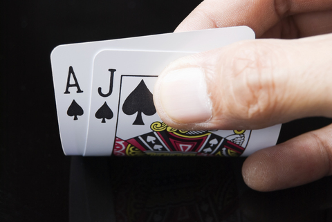

The search algorithms explored in the previous assignment work great when you know exactly the results of your actions. Unfortunately, the real world is not so predictable. One of the key aspects of an effective AI is the ability to reason in the face of uncertainty.
Markov decision processes (MDPs) can be used to formalize uncertain situations where the goal is to maximize some kind of reward. In this homework, you will implement the algorithms that can be used to automatically construct an optimal policy for any such uncertain situation. You will then formalize a modified version of Blackjack as an MDP, and apply your algorithm to come up with an optimal policy.
In this problem, you will perform the value iteration updates manually on a very basic game just to solidify your intuitions about solving MDPs. The set of possible states in this game is {-2, -1, 0, 1, 2}. You start at state 0, and if you reach either -2 or 2, the game ends. At each state, you can take one of two actions: {-1, +1}.
If you're in state $s$ and choose -1:
Now, you will implement value iteration for finding the optimal policy automatically on on any MDP. Later, we'll create the specific MDP for Blackjack.
solve() function in class ValueIteration.
If we add noise to the transitions of an MDP, does the optimal
value get worse?
Specifically, consider an MDP with reward function
$\text{Reward}(s,a,s')$, state space $\text{States}$, and transition function
$T(s,a,s')$. We define a new MDP which is identical to the original, except
for its transition function, $T'(s,a,s')$, which is defined as
$$T'(s,a,s')=\frac{T(s,a,s')+\alpha}{\sum_{s'\in\text{States}}\left[T(s,a,s')+\alpha\right]}$$
for some $\alpha>0$. Let $V_1$ be the optimal value function for the
original MDP, and $V_2$ the optimal value function for the MDP with added
uniform noise. Is it always the case that $V_1(s_\text{start})\geq
V_2(s_\text{start})$? If so,
prove it in writeup.pdf and put return None for each of the code blocks.
Otherwise, construct a counterexample by filling out CounterexampleMDP and
counterexampleAlpha().
Now that we have written general-purpose MDP algorithms, let's use them to play (a modified version of) Blackjack. For this problem, you will be creating an MDP to describe a modified version of Blackjack.
For our version of Blackjack, the deck can contain an arbitrary collection of cards with different values, each with a given multiplicity. For example, a standard deck would have card values $\{1, 2, \ldots, 13\}$ and multiplicity 4. However, you could also have a deck with card values $\{1,5,20\}$, or any other set of numbers. The deck is shuffled (each permutation of the cards is equally likely).
The game occurs in a sequence of rounds.
Each round, the player either
(i) takes a card from the top of the deck (costing nothing),
(ii) peeks at the top card
(costing peekCost, in which case the next round, that card will be drawn),
or (iii) quits the game.
Note that it is not possible to peek twice; if the player peeks twice in a row, then
succAndProbReward() should return [].
The game continues until one of the following conditions becomes true:
As an example, assume the deck has card values $\{1, 2, 3\}$, with multiplicity 1.
Let's say the threshold is 4. Initally, the player has no cards, so her total is 0.
At this point, she can peek, take, or quit. If she takes, the three possible
successor states are
$\{$(1, None, (0, 1, 1)), (2, None, (1, 0, 1)), (3, None, (1, 1, 0))$\}$. She will receive 0 reward for reaching any these states.
If she instead peeks, the three possible successor states are $\{$(0, 0, (1, 1, 1)), (0, 1, (1, 1, 1)), (0, 2, (1, 1, 1))$\}$ (0, 1, and 2 refer to the index of the peeked card). Note that she has to pay the peekCost to reach these states.
In your code, you should signify the end of the game by setting your deck to None. For example, let's say her current state is (3, None, (1, 1, 0)). If she quits, the successor state will be (3, None, None). If she takes, the successor states are (3 + 1, None, (0, 1, 0)) or
(3 + 2, None, None). Note that in the second successor state, the deck is set to None to signify the game ended with a bust. You should also set the deck to None if the deck runs out of cards.
succAndProbReward() function of class BlackjackMDP.
To help out out, we have already given you startState().
peekingMDP() to return an instance of
BlackjackMDP where the optimal action is to peek in at least
10% of states.
So far, we've seen how MDP algorithms can take an MDP which describes the full dynamics of the game and return an optimal policy. But suppose you go into a casino, and no one tells you the rewards or the transitions. We will see how reinforcement learning can allow you to play the game and learn the rules at the same time!
You will first implement a generic Q-learning algorithm QLearningAlgorithm,
which is an instance of an RLAlgorithm. As discussed in class,
reinforcement learning algorithms are capable of executing a policy while
simultaneously improving their policy. Look in simulate(), in
util.py to see how the RLAlgorithm will be used. In
short, your algorithm will be run in a simulation of the MDP, and will
alternately be asked for an action to perform in a given state, and then be
informed of the result of that action, so that it may learn better actions to
perform in the future.
Recall that Q-learning attempts to learn a Q function for an MDP, and uses the Q function
to construct its policy. To improve generalization, instead of learning the Q
function directly, we represent states and actions using a feature
representation. That is, we have a featureExtractor() function
that maps from a (state, action) pair to a feature vector. We then learn a weight vector that maps
from this feature representation to an approximate Q value. You can see this
in action in the getQ() function. This function computes a dot
product of the current weight vector with the feature values extracted from a
given (state, action) pair.
Note that we represent a feature vector as a list of (object, double) pairs. This represents the same information as a dict, in that each object (feature) is mapped to a double (value). This sparse list representation is more efficient than using a dict when most of the feature values are 0. Because we only ever use our feature vector in dot products with or addition to the weight vector, we can represent the feature vector as a list and the weight vector as a dict. We can then always iterate over the feature vector and look up corresponding values in the weight vector dict.
At every step, Q-learning will select an action according to an
$\epsilon$-greedy policy. That is, with probability $\epsilon$, it will
select an action uniformly at random, and with probability $1-\epsilon$, it
will select action
$$\pi(s)=\mathop{\text{arg max}}_{a\in\text{Actions}(s)}Q(s,a)$$
where $Q$ is its current estimate of the $Q$ function for the MDP. We've implemented
this action selection step for you in QLearningAlgorithm.getAction().
After action selection, the simulation will call
QLearningAlgorithm.incorporateFeedback() so that the Q-learning
algorithm can improve its estimate of $Q$. The function
incorporateFeedback will be called with parameters $(s, a, r,
s')$, where $s$ and $a$ are the state and action that the algorithm chose in
the previous getAction step, and $r$ and $s'$ are the reward
that was received and the state to which the MDP transitioned. In the
incorporateFeedback function, you first compute the residual
$$r=\left[\text{Reward}(s,a,s')+\gamma
\mathop{\text{max}}_{a'\in\text{Actions}(s')}Q^{(t)}(s',a')\right] - Q^{(t)}(s,a)$$
This should then be used to update the weight vector representing our $Q$
function:
$$w^{(t+1)}=w^{(t)}+\eta \cdot r \cdot \phi(s,a)$$
Here $\phi$ is the feature extractor self.featureExtractor and
$\eta$ is the step size getStepSize(). Implement
QLearningAlgorithm.incorporateFeedback().
simulate using your algorithm and the
identityFeatureExtractor() on the MDP smallMDP, with
30000 trials. Compare the policy learned in this case to the policy
learned by value iteration. Don't forget to set the explorationProb of your
Q-learning algorithm to 0 after learning the policy. How do the two policies
compare (i.e., for how many states do they produce a different action)? Now
run simulate() on largeMDP. How does the policy
learned in this case compare to the policy learned by value iteration? What
went wrong?
blackjackFeatureExtractor.
Using this feature extractor, you should be able to get pretty close to the
optimum on the largeMDP.
originalMDP to compute an
optimal policy. Then apply your policy to newThresholdMDP by
calling simulate with FixedRLAlgorithm, instantiated
using your computed policy. What reward do you get? What happens if you run Q
learning on newThresholdMDP instead? Explain.